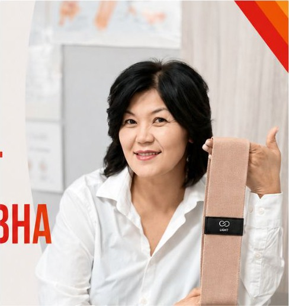
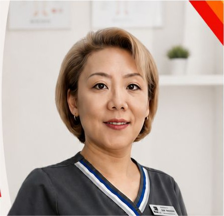
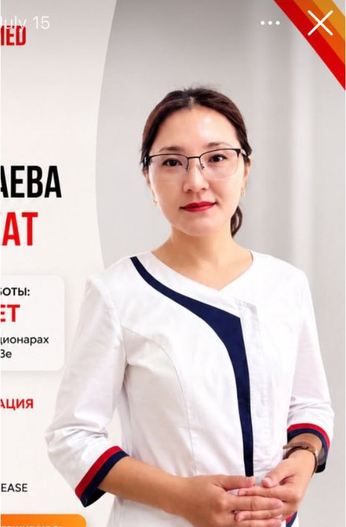
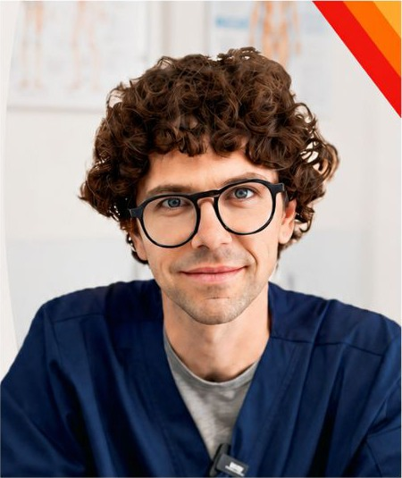
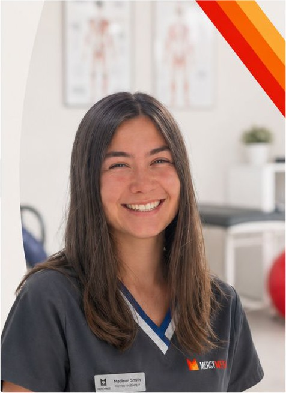
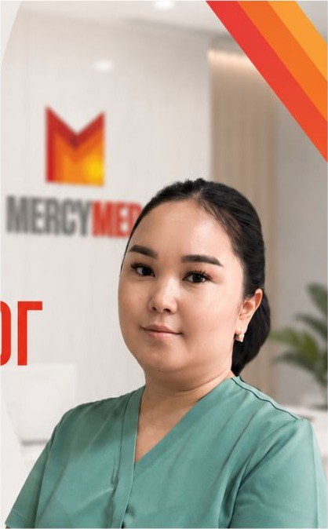
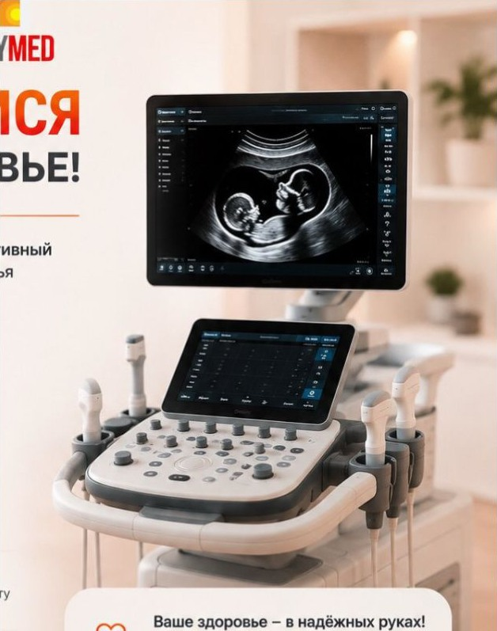

Team
Experienced local and international specialists

Mahabat Alieva
Director / Doula
Jonathan Williams
Chief doctor / Pediatrics

Irina Pak
Pediatrics / Family medicine

Nasyikat Dononbaeva
Internal medicine / Pulmonology
Nabat Gasimova
Pediatrics / Intensivist

Nancy Yau
Pediatrics

Lukas Meyer-Landholt
Pediatrics / Oncology

Madison Smith
Physical therapist

Simbat Sadyrbaeva
Gynecology

Nargiza Islamova
Ultrasound
Full biographies: awaiting client confirmation.